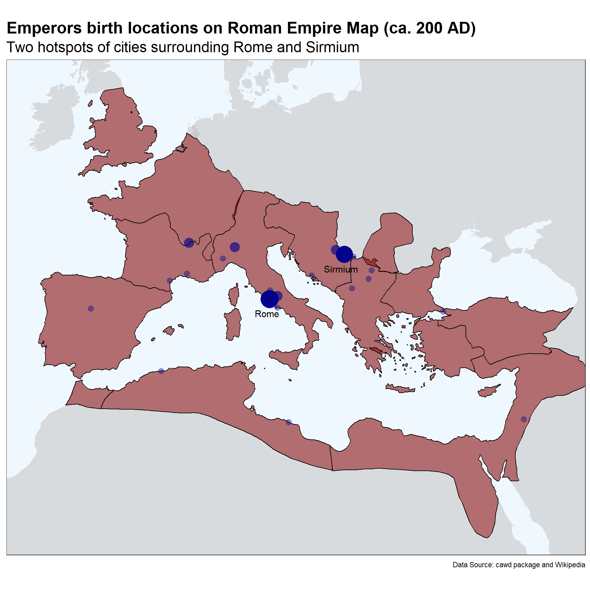
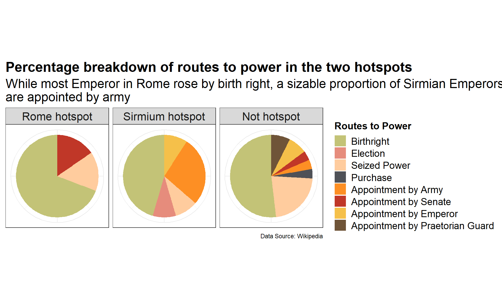
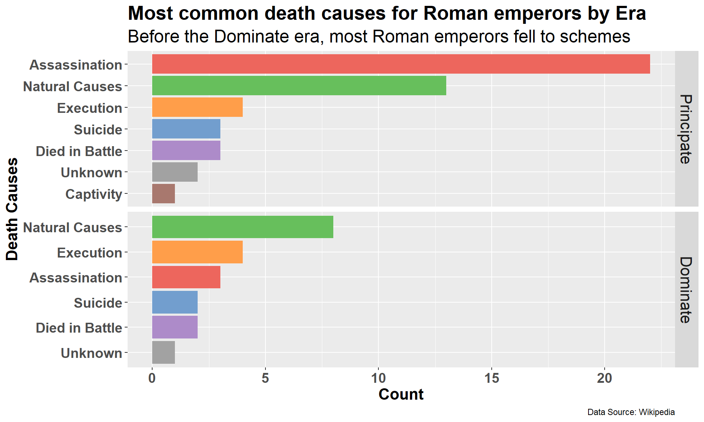
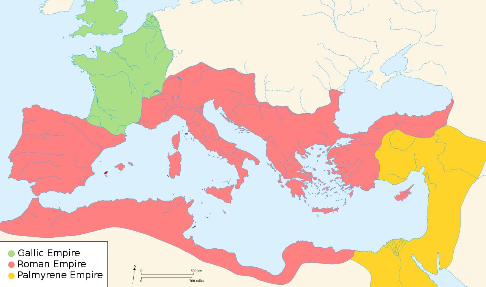
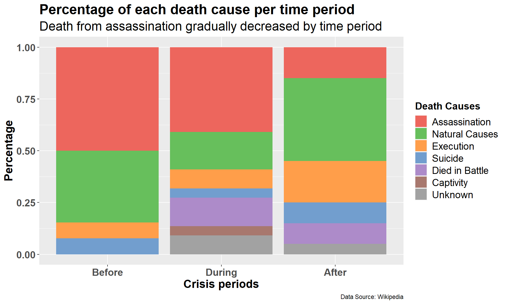

I dedicated some time in my undergraduate to explore a wide variety of topics. When I was learning a summer Latin course, the verses and stories ignited my interests in the ancient Roman history. The Roman Empire was a blooming civilization rose from a humble beginning in the distant past. A fair amount of documentations provided us a window to observe the life of Romans. While glories accompanied the Roman Republic and Roman Empire through most of its history, the intrigues and conflicts within the political body have been an interesting subject for historians. Wikipedia collected a list of Roman Emperors with information annotated according to ancient documents. (Contributors 2019) This dataset is shared by Tidy Tuesday for public use. (Hughes 2023) We are going to take this dataset to explore the life and death of Roman Emperors for anyone might be interested in the Roman history.
In this analysis, we are going to use two data sources. The major one is the emperors.csv dataset from tidytuesdayR, and the other is the ancient Roman Empire map ca 200 AD data in the package cawd. (Heath 2023)
emperors.csv
variable
class
description
index
double
Numerical Index
name
character
Name
name_full
character
Full Name
birth
date
Birth date
death
date
Death date
birth_cty
character
Birth city
birth_prv
character
Birth Province
rise
character
How did they come to power
reign_start
date
Date of start of reign
reign_end
date
Date of end of reign
cause
character
Cause of death
killer
character
Killer
dynasty
character
Dynasty name
era
character
Era
notes
character
Notes
verif_who
character
If verified, by whom
Note
The cawd package can be installed by devtools::install_github("sfsheath/cawd"). The map data is a large SpatialPolygonsDataFrame obtained through data(awmc.roman.empire.200.sp). For it to be worked with ggplot2 package, we need to use the tidy command in broom package to process it into a ggplot2-friendly format.
Code
# check for missing packages and installusing.packages <-c('ggplot2','here','tidyverse','tidytext','remotes','devtools','tidygeocoder','broom','ggthemes','kableExtra')mask.packages <-!using.packages %in%installed.packages()if (any(mask.packages)){install.packages(using.packages[mask.packages])}if (!'cawd'%in%installed.packages()){ devtools::install_github("sfsheath/cawd")}# read in required packageslapply(using.packages, require, character.only =TRUE)
Code
# tests if a directory named "data" exists locallyif (!dir.exists(here("data"))) {dir.create(here("data"))} rds_files <-c("emperors.RDS","empire_maps.RDS")## Check whether we have all data filesif (any(!file.exists(here("data", rds_files)))) {## If we don't, then download the data emperors <- readr::read_csv("https://raw.githubusercontent.com/rfordatascience/tidytuesday/master/data/2019/2019-08-13/emperors.csv",show_col_types =FALSE)## assign longitude and latitude data for emperors birth city emperors <- emperors %>% tidygeocoder::geocode(city = birth_cty) # acquire empire data and tidy into ggplot2 formatlibrary(cawd)data(awmc.roman.empire.200.sp) broom::tidy(awmc.roman.empire.200.sp) -> roman.empire.maps.gg## Then save the data objects to RDS filessaveRDS(emperors, file =here("data", "emperors.RDS"))saveRDS(roman.empire.maps.gg, file =here("data", "empire_maps.RDS"))} emperors <-readRDS(here("data", "emperors.RDS"))roman.empire.maps.gg <-readRDS(here("data", "empire_maps.RDS"))
Analysis
Where did Roman Emperors born?
The first question we can explore with this dataset is the birth cities of Roman Emperors. In the chart below, Rome and Sirmium stood out as the cities born the most Emperors.
Code
emperors.longlat <- emperors %>%count(birth_cty,sort=TRUE) %>%filter(!is.na(birth_cty)) %>%left_join(select(emperors,c('birth_cty','long','lat'))) %>%group_by(birth_cty)emperors.longlat %>%count(birth_cty,sort=TRUE) %>%filter(!is.na(birth_cty)) %>%ggplot(aes(x=fct_reorder(birth_cty, n,.desc =TRUE),n)) +geom_col(aes(fill=cut(n, c(0, 5, 10))))+scale_fill_manual(values=c('#535D67','#F5B355'))+scale_y_continuous(name='count',breaks=0:10)+# Assign appropriate axis labels and titles xlab('Birth Cities')+ylab('Count') +labs(title ='Number of Emperors born in each city', subtitle ='Most Emperors born in Rome and Sirmium',caption ='Data Source: Wikipedia')+theme(axis.text.x =element_text(angle =45, vjust =1, hjust=1))+# Adjust text stylestheme(axis.text =element_text(size =12),axis.title =element_text(size =16,face ='bold'),plot.title =element_text(size =20,face ='bold',color ='black'),legend.position ="none",plot.subtitle =element_text(size =18))
Code
world.maps <-map_data("world")roman.empire.maps.gg %>%ggplot(aes(x = long, y = lat)) +geom_polygon(data=world.maps,aes(x=long,y=lat,group=group),fill ='grey',alpha = .5)+geom_polygon(aes(group = group), colour="black", fill ='darkred', alpha = .5) +coord_map(xlim =c(-10, 40),ylim =c(23, 55))+geom_text(aes(label = birth_cty), data =unique(subset(emperors.longlat,n>5)), size =4, hjust =0.6,vjust=2.5)+geom_point(data=emperors.longlat, aes(x = long, y = lat, size = n), alpha=0.4, color="darkblue") +scale_size(range =c(3, 10))+# Assign appropriate axis labels and titles labs(title ='Emperors birth locations on Roman Empire Map (ca. 200 AD)', subtitle ='Two hotspots of cities surrounding Rome and Sirmium',caption ='Data Source: cawd package and Wikipedia')+theme(axis.text.x =element_text(angle =45, vjust =1, hjust=1))+# Adjust text stylestheme_bw()+theme(axis.title =element_blank(),axis.text =element_blank(),axis.ticks =element_blank(),plot.title =element_text(size =20,face ='bold',color ='black'),legend.position ="none",plot.subtitle =element_text(size =18),panel.grid.major =element_blank(),panel.background =element_rect(fill ='aliceblue'))

Sirmium was once one of the four capitals of the Roman Empire. A major city destoryed by the end of 6th century [Read more] (photo credit: serbianprivatetours.com)
Warning
At here, xlim and ylim is applied inside coord_map() rather than the limits in scale_x_continuous(). When restricting axis limits on the scale, the geom_polygon() generated by ggplot2 could be clipped by plot borders and result in incomplete generation of the map areas.
With the map data we could plot out the locations of Emperor birth cities. The province borders in the ancient Roman Empire are drawn out in black lines. We could observe that the birth cities are mostly clustered around the two major city Rome and Sirmium, which gives us the next quesiton: What’s is different between these two clusters and how do they compare to other non-hotspot locations?
How did they rise to power?
In this pie chart below, most Emperors born around Rome inherited the position by their birthright, where a sizable proportion of Emperors born around Sirmium were appointed by the Army. The border location of Sirmium as seen in the map could have been a reason why the city became heavily stationed with troops, which provided opportunities for military usurpation. Emperors born other locations had a varieties of ways to put themselves in power. Still, regardless of birth cities, the majority of Roman Emperors are born into power.
Code
rome.hotspot <- emperors.longlat %>%filter(between(long,12.48-2,12.48+2)&between(lat,41.89-2,41.89+2)) %>%pull(birth_cty) %>%unique()sirmium.hotspot <- emperors.longlat %>%filter(between(long,19.61-2,19.61+2)&between(lat,44.97-2,44.97+2)) %>%pull(birth_cty) %>%unique()emperors %>%filter(!is.na(birth_cty)) %>%mutate(hotspots =case_when( birth_cty %in% rome.hotspot ~'Rome hotspot', birth_cty %in% sirmium.hotspot ~'Sirmium hotspot',TRUE~'Not hotspot' )) %>%group_by(hotspots) %>%count(rise,sort=TRUE) %>%mutate(rise =factor(rise,level=c('Birthright','Election','Seized Power','Purchase','Appointment by Army','Appointment by Senate','Appointment by Emperor','Appointment by Praetorian Guard' ))) %>%mutate(hotspots =factor(hotspots,level=c('Rome hotspot','Sirmium hotspot','Not hotspot' ))) %>%ggplot(aes(x='',y=n,fill=rise)) +geom_bar(position="fill", stat="identity", width=1)+coord_polar("y", start=0) +facet_grid(.~hotspots) +scale_fill_manual(values =c('Birthright'="#C3C377",'Election'="#E68C7C",'Seized Power'="#FFCC9E",'Purchase'="#4F5157",'Appointment by Army'="#FD8F24",'Appointment by Senate'="#C03728",'Appointment by Emperor'="#F5C04A",'Appointment by Praetorian Guard'='#6F5438' ))+# Assign appropriate axis labels and titles labs(fill='Routes to Power',title ='Percentage breakdown of routes to power in the two hotspots',subtitle ='While most Emperor in Rome rose by birth right, a sizable proportion of Sirmian Emperors \nare appointed by army',caption ='Data Source: Wikipedia')+theme(axis.text.x =element_text(angle =45, vjust =1, hjust=1))+# Adjust text stylestheme_bw()+theme(axis.title =element_blank(),axis.text =element_blank(),axis.ticks =element_blank(),plot.title =element_text(size =20,face ='bold',color ='black'),plot.subtitle =element_text(size =18),strip.text =element_text(size =16),legend.title =element_text(size =14,face ='bold'),legend.text =element_text(size =14))

How did Roman Emperors died?
Speaking of intrigues and conflicts in Roman history, assassination has been a favorite Roman method to get rid of political enemies. One of the most famous Roman assassination was the Assassination of Julius Caesar, which passed Caesar’s power through his death wish to the first Roman Emperor, Caesar Augustus. Before the Roman Empire transitioned into the Dominate era (late Roman Empire), more than 20 Emperors died from various assassination successes.
Code
emperors %>%group_by(era) %>%count(cause,sort=TRUE) %>%mutate(era =factor(era,levels=c('Principate','Dominate'))) %>%ggplot(aes(x=tidytext::reorder_within(cause, n, within = era),n,fill=cause)) +geom_col() + tidytext::scale_x_reordered()+scale_fill_manual(values =c('Assassination'="#ED665D",'Natural Causes'="#67BF5C",'Execution'="#FF9E4A",'Suicide'="#729ECE",'Died in Battle'="#AD8BC9",'Unknown'="#A2A2A2",'Captivity'="#A8786E"))+coord_flip() +facet_grid(era~.,scales ="free_y")+# Assign appropriate axis labels and titles xlab('Death Causes')+ylab('Count') +labs(title ='Most common death causes for Roman emperors by Era', subtitle ='Before the Dominate era, most Roman emperors fell to schemes',caption ='Data Source: Wikipedia')+# Adjust text stylestheme(axis.text =element_text(size =14,face ='bold'),axis.title =element_text(size =16,face ='bold'),plot.title =element_text(size =20,face ='bold',color ='black'),legend.position ="none",plot.subtitle =element_text(size =18),strip.text =element_text(size =16))

Reign length of each emperor across 400 years
In the plot below, the starts and ends of each reign are shown in segments. Intuitively, long lines indicate long and stable reigns of an Emperor, while suddenly increased slope of the curve indicates a period of instability. The region bounded by two dashed lines displays quick succession of power changes. This 50-year period is known as the Crisis of the Third Century.
Code
# Deal with BC timeref =as.numeric(as.Date("1970-01-01") -as.Date("0000-01-01"))## Plotemperors %>%mutate(reign_start =case_when( name =="Augustus"~as.Date(-(as.numeric(as.Date("0026-01-16"))+ref), "0000-01-01"), # New value for AugustusTRUE~ reign_start # Keep the original value for other cases ))%>%mutate(name =fct_reorder(name,reign_start))%>%ggplot(aes(y=name))+geom_point(aes(x=reign_start),color='#F89217')+geom_point(aes(x=reign_end),color='#4F7CBA')+geom_segment(aes(x = reign_start, xend = reign_end, y = name, yend = name), color ="black", size =1)+geom_vline(xintercept =as.numeric(ymd('0235-03-18')),linetype=2) +geom_vline(xintercept =as.numeric(ymd('0284-11-20')),linetype=2) +# annotate("text", x = ymd('0180-1-1'), y = 'Valerian', label = "A period of instability?",size= 6) +# Assign appropriate axis labels and titles xlab('Years (AD)')+ylab('Emperors') +labs(title ='Reign length of each Roman emperors', subtitle ='Before 235 AD, Roman Emperors reigns were mostly stable',caption ='Data Source: Wikipedia')+# Adjust text stylestheme(axis.text =element_text(size =14,face ='bold'),axis.title =element_text(size =16,face ='bold'),axis.text.y =element_blank(),legend.position ="none",plot.title =element_text(size =20,face ='bold',color ='black'),plot.subtitle =element_text(size =18))
Warning: Using `size` aesthetic for lines was deprecated in ggplot2 3.4.0.
ℹ Please use `linewidth` instead.
Warning
When dealing with “ancient” datasets, I inevitably encountered trouble with BC and AD time conversion. In our dataset, the reign start date of Augustus the first Emperor is recorded as a positive value of the BC date just as the subsequent AD dates. If directly plotted, it will mistakenly plot the start of Augustus reign after his reign ends.
Note
The solution here is to find the difference between the epoch time 1970-1-1 and start of the AD first century 0000-01-01. If we add the numerical value of the Augustus reign start date 0026-01-16 (BC) and apply a negative sign to it, it should represent the numerical value of the BC time in reference to 1970-1-1 as zero. Subsequent time calculations involving BC times will all use this method to derive the correct result.
Crisis of the 3rd century?
Data wrangling
Code
# data wranglingemperors.crisis <- emperors %>%mutate(reign_start =case_when( name =="Augustus"~as.Date(-(as.numeric(as.Date("0026-01-16"))+ref), "0000-01-01"), # Adjust reign start dateTRUE~ reign_start # Keep the original value for other cases )) %>%mutate(birth =case_when( name =="Augustus"~as.Date(-(as.numeric(as.Date("0062-09-23"))+ref), "0000-01-01"), # Adjust birth dates name =="Tiberius"~as.Date(-(as.numeric(as.Date("0041-11-16"))+ref), "0000-01-01"), name =="Claudius"~as.Date(-(as.numeric(as.Date("0009-08-01"))+ref), "0000-01-01"), name =="Galba"~as.Date(-(as.numeric(as.Date("0002-12-24"))+ref), "0000-01-01"),TRUE~ birth # Keep the original value for other cases )) %>%mutate(crisis =case_when( reign_start <ymd('0235-03-18') ~'Before', reign_start >ymd('0284-11-19') ~'After',TRUE~'During' )) %>%mutate(reign_length = reign_end - reign_start) %>%mutate(reign_age = reign_start - birth) %>%mutate(retire_age = reign_end - birth) %>%mutate(life_length = death - birth) %>%mutate(crisis =factor(crisis,levels=c('Before','During','After')))## sumarizeemperors.crisis %>%group_by(crisis) %>%filter(!is.na(birth)) %>%summarize(Avg_reign =as.integer(mean(reign_length)), Std_reign =as.integer(sd(reign_length)),Avg_life =as.integer(mean(life_length/365.25)),Std_life =as.integer(sd(life_length/365.25))) %>%rename(Crisis_Period = crisis,Average_Reign_days = Avg_reign,Standard_Deviation_Reign = Std_reign,Average_Life_years = Avg_life,Standard_Deviation_Life = Std_life ) %>%kable(formtat='html',caption ='Reign time and life time statistics before, during and after crisis')%>%row_spec(2,background ='lightpink') %>%row_spec(0, bold=T) %>% kableExtra::kable_styling(bootstrap_options =c('hover','condensed','responsive'))
Reign time and life time statistics before, during and after crisis
Crisis_Period
Average_Reign_days
Standard_Deviation_Reign
Average_Life_years
Standard_Deviation_Life
Before
4054
3699
51
18
During
1056
1362
53
15
After
4467
3167
45
16

During the Crisis of the Third Century, the Roman Empire is divided into three parts and conflicted militarily, leading to economical collapse. [Read more]
During the Crisis of the Third Century, the average reign length dramatically decreased. However, contrary to my intuition, the life length of the emperors during this time does not seem to be affected much.
Death Causes during crisis compared to before and after
During the crisis period, we should expect more unnatural deaths due to wars and schemes. Compared to before the crisis, natural death cause occupies much less percentage. A few Emperors are died in battle. Interestingly, after the crisis, less Emperors fell to assassination, instead execution became more common.
Code
emperors.crisis %>%group_by(crisis) %>%count(cause,sort=TRUE) %>%mutate(cause =factor(cause,levels=c('Assassination','Natural Causes','Execution','Suicide','Died in Battle','Captivity','Unknown')))%>%ggplot(aes(fill=cause, y=n, x=crisis)) +geom_bar(position="fill", stat="identity")+scale_fill_manual(values =c('Assassination'="#ED665D",'Natural Causes'="#67BF5C",'Execution'="#FF9E4A",'Suicide'="#729ECE",'Died in Battle'="#AD8BC9",'Unknown'="#A2A2A2",'Captivity'="#A8786E"))+# Assign appropriate axis labels and titles xlab('Crisis periods')+ylab('Percentage') +labs(title ='Percentage of each death cause per time period', subtitle ='Death from assassination gradually decreased by time period',caption ='Data Source: Wikipedia',fill='Death Causes')+# Adjust text stylestheme(axis.text =element_text(size =14,face ='bold'),axis.title =element_text(size =16,face ='bold'),plot.title =element_text(size =20,face ='bold',color ='black'),legend.title =element_text(size =14,face ='bold'),legend.text =element_text(size =14),plot.subtitle =element_text(size =18))

Summary
By engaging with this dataset, I learned a lot about ancient Roman history. Our exploration of the birth cities of Roman Emperors helped us find Sirmium’s role as a vital military and political center within the Roman Empire. A notable shift in the curve depicting reign lengths directed our attention to the Crisis of the Third Century. Looking at the Emperors’ death causes offered us insights into the evolution of the Roman Empire.
While many analyses strive to address contemporary issues, dissecting this ancient dataset is more like a benchmarking process for data analysis. It illustrated that data has the potential to unravel the underlying stories of the real world.